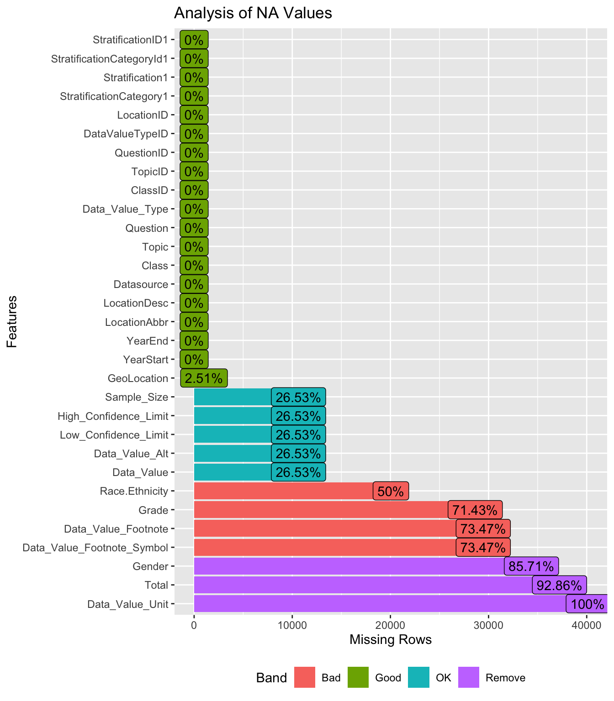
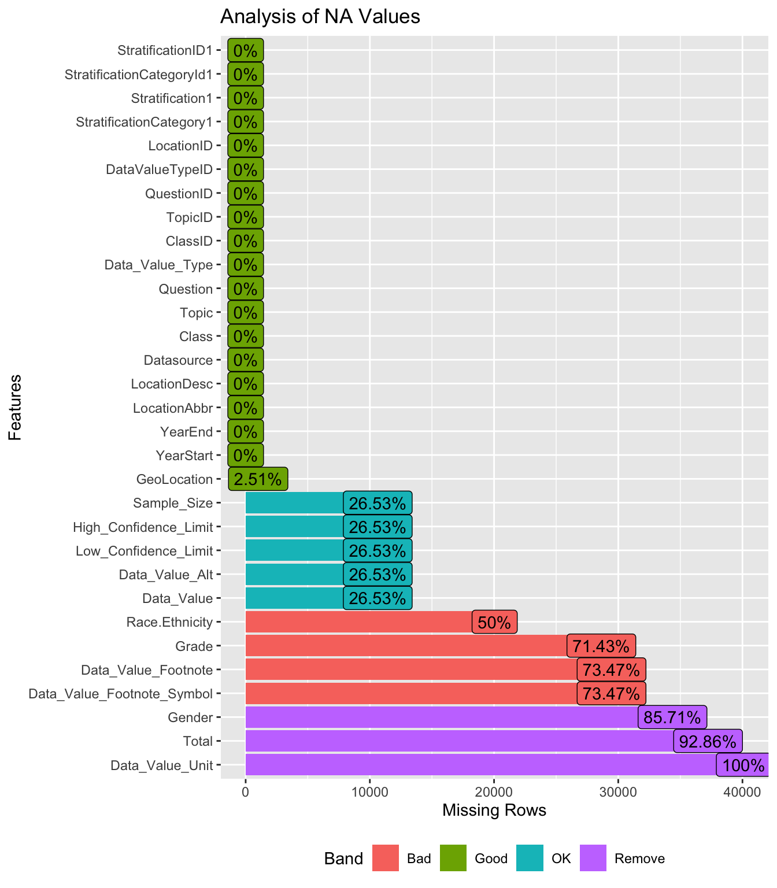
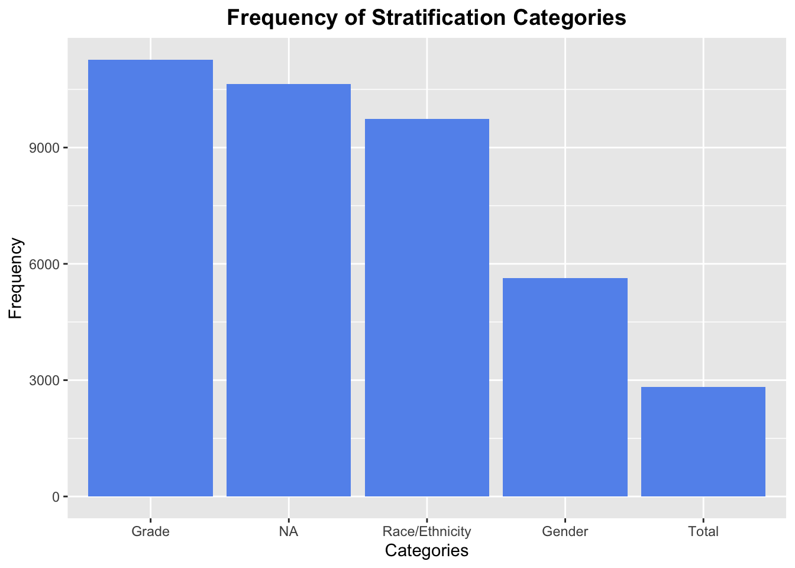

Code
library(ggplot2)
library(forcats)
library(DataExplorer)
data <- read.csv("obesity_dataset.csv")
data[data==""]<- NA
plot_missing(data, title = "Analysis of NA Values")
For this project, we will be using data from the CDC pertaining to youth health risk factors. The specific risk factors that we will be exploring are nutrition, physical activity, and obesity. The data is being collected by the Youth Risk Behavior Surveillance System, a set of surveys that tracks behaviors that can lead to poor health for students in high school (9th-12th grade). The data is owned by the Division of Nutrition, Physical Activity, and Obesity (DNPAO). Our data was created on July 22, 2016, last updated on January 29, 2021, and the meta-data was last updated on August 25, 2023.
There are 31 columns and 40,100 rows in this data set as of the last update. The data contains a mix of strings and floats. Some of the columns that we plan to use in our analysis include “YearStart”, “YearEnd”, “LocationAbbr”, “Topic”, “Question”, “Data_Value”, “Sample_Size”, “Total”, “Gender”, “Grade”, and “Race/Ethnicity”. In particular, the “LocationAbbr”, Gender”, “Grade”, and “Race/Ethnicity” columns will inform us of specific demographics of each observation. We will use these to analyze how different demographics are impacted by the youth health risk factors.
After taking a glance at the data, we immediately noticed that there are several “NA” values which will need to be dealt with before analyzing youth risks by the demographics listed above. There are also several columns that will not be needed for our analysis, so we will subset the data so that further data manipulation will be more efficient. We will save the data as a “.csv” file and then import the data using the “read_csv()” function in R.
Sources:
Since we will be answering the four questions mentioned in the Introduction, we will break this section into four parts. Our data set contains several columns which will allow us to answer these questions.
In this section, we will tackle the question of whether certain races are more prone to obesity than others. We will use the “Class”, “Data_Value”, and “StratificationCategory1” columns for this analysis. The “Class” column informs us which health risk category the question pertains to; for this question, we will specifically filter for the “Obesity / Weight Status” class. The “Data_Value” column provides us information on the percentage of students that face the specified health risk. The “StratificationCategory1” column contains information on which demographic the data has been stratified on; for this question, we will group by “Race/Ethnicity” so that we can understand the obesity percentages by race. We will create a bar plot using the “ggplot2” library and plot the races on the x-axis and the obesity percentages on the y-axis. This will allow us to see which race(s) is the most prone to obesity.
In this section we will tackle the question of how lifestyle choices impact obesity rates. We will use the “Class”, Data_Value”, and “StratificationCategory1” columns for this analysis. The “Class” column informs us which health risk category the question pertains to; for this question, we will specifically filter out the “Obesity / Weight Status” class. In other words, we will keep all the rows containing the values “Physical Activity”, “Sugar Drinks”, Fruits and Vegetables”, and “Television Viewing” since these are specific lifestyle choices. The “Data_Value” column provides us information on the percentage of students that face the specified health risk. The “StratificationCategory1” column contains information on which demographic the data has been stratified on; for this question, we will group by “Race/Ethnicity” so that we can understand the obesity rates by race. We will create a mosaic plot using the “ggplot2” library and plot the lifestyle choices and races on the horizontal-axis and the obesity percentages on the vertical-axis. This will allow us to see the impact of lifestyle choices by race on obesity rates. We will repeat this process for “Gender” and “Grade” stratifications and describe any differences in overall obesity rates.
In this question we will tackle the question of whether geographic locations of residence impact the onset of obesity. We will use the “Class”, “Data_Value”, and “LocationAbbr” columns for this analysis. The “Class” column informs us which health risk category the question pertains to; for this question, we will specifically filter for the “Obesity / Weight Status” class. The “Data_Value” column provides us information on the percentage of students that face the specified health risk. The “LocationAbbr” column contains state name abbreviations where the data samples were taken from; we will group by this column so that we can observe which states have the highest obesity percentages. We will create a bar plot using the “ggplot2” library and plot the state name abbreviations on the x-axis and the obesity percentages on the y-axis. This will allow us to see which state(s) has the highest obesity rate.
In this question we will tackle the question of how obesity rates change over a decade for all health factors. We will use the “YearEnd”, Class”, and “Data_Value” columns for this analysis. The “YearEnd” column tells us which year the data for a specific class, location, and stratification was last collected. Most of the data collection lasts one year for each observation but there are cases where the data collection lasts more than one year (i.e. “YearEnd” - “YearStart” > 0) and this is one potential issue we will have to deal with. The “Class” column informs us which health risk category the question pertains to; for this question, we will use all classes. The “Data_Value” column provides us information on the percentage of students that face the specified health risk. We will create either an overlapping line graph or an overlapping ridge line plot using the “ggplot2” library and plot the years on the x-axis and the obesity rates on the y-axis. Each line graph/ridge line plot will be a different health factor. This will allow us to see which health factor(s) incurs the most change in obesity rates over time.
First, to analyze the dataset as a whole, we replaced all empty strings with NA to allow for easier calculation. Then, we ran the plot_missing function on the entire dataset. As seen in the figure below, the “Data_Value_Unit” column has 100% NA values, and thus can be removed entirely. There are a few others columns with a high NA rate, such as “Gender”, “Total”, “Data_Value_Footnote”, etc. The reason that most of the major demographics (i.e. “Gender”, “Race/Ethnicity”, “Grade”) have many NA values is because those specific columns will only contain a value if the observation was stratified by that demographic. For instance, if the data in a row was with regards to the “Gender” percentage of adolescents, the “Gender” column would have a value and the “Race/Ethnicity” and “Grade” columns would be empty. For this reason, the “Stratification1” and “StratificationCategory1” columns have no NA values, since they store this data. Thus, when beginning data analysis, we will remove the “Gender”, “Race/Ethnicity”, “Grade”, “Total”, and other similar columns and only keep the stratified columns.
library(ggplot2)
library(forcats)
library(DataExplorer)
data <- read.csv("obesity_dataset.csv")
data[data==""]<- NA
plot_missing(data, title = "Analysis of NA Values")
With regards to the whole dataset, one of the primary variables of interest is the “Data_Value” variable which indiactes the percentage of students with respect to a category (“Race/Ethnicity”, “Grade”, “Gender”, “Total”) that correspond to the question. For instance, the first row of the dataset has a “LocationDesc” of “Alaska”, “YearStart” and “YearEnd” as “2019”, “Question” of “Percent of students in grades 9-12 who achieve 1 hour or more of moderate-and/or vigorous-intensity physical activity daily” with a “Data_Value” of “9.6” stratified on “Race/Ethnicity” with a value of “Asian”. To break this down, this means that in 2019, 9.6% of Asians in Alaska achieved 1+ hour of moderate-and/or vigorous physical activity daily.
However, some values in the “Data_Value” column are marked as NA. So, even though there is a corresponding state, date, stratification, etc., the value is not given. Thus, we wanted to compare how many NA data values there were in the dataset, and how many values corresponding to other stratificaiton categories there were. The results are shown in the bar graph below.
data$missing_values <- data$StratificationCategory1
data$missing_values[is.na(data$Data_Value)] = 'NA'
data_subset_1 <- data[data$Data_Value_Footnote != "", ]
ggplot(data, aes(x=fct_infreq(missing_values))) +
geom_bar(fill="gray") +
labs(title = "Frequency of Stratification Categories", x = "Categories", y = "Frequency") +
theme(plot.title = element_text(hjust = 0.5, color = "black", size = 14, face = "bold"))
From the bar chart above, we can see that there are a little above 10000 data points that do not have a given data value, and will be removed prior to analysis. This is corroborated by our first plot which shows 26.53% NA values for the “Data_Value” column.